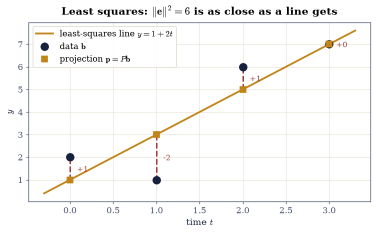

2.1 Projections and the Normal Equations#
Notebook overview#
Chapter I asked what a matrix can reach. This chapter asks what to do when the thing you want is out of reach, which is the normal situation.
§1.4 established that \(A\mathbf{x} = \mathbf{b}\) has a solution exactly when \(\mathbf{b}\) lies in the column space. Real data essentially never does: measure four points that should lie on a line and they will not, because measurements carry noise and models are approximations. The system is inconsistent, and asking for an exact solution is asking the wrong question.
The right question is: which \(\mathbf{x}\) makes \(A\mathbf{x}\) closest to \(\mathbf{b}\)? And the answer is entirely geometric. The reachable vectors form the column space, a subspace; the closest point of a subspace to a given point is the foot of the perpendicular from it; so the answer is \(\mathbf{p} = P\mathbf{b}\), where \(P\) is the orthogonal projector onto \(C(A)\). Everything else in this notebook — the normal equations, the formula \(P = A(A^{\top}A)^{-1}A^{\top}\), the fact that the residual is orthogonal to every column — is that one sentence written out.
The picture is the one §1.4 drew in \(\mathbb{R}^3\): an amber plane, a perpendicular line, and \(\mathbf{b}\) split between them. Here we compute with it. And the residual is not an embarrassment: it is exactly the component of the data in \(N(A^{\top})\), the part no choice of parameters could ever explain, and its size is the honest measure of how well the model fits.
One warning to carry forward. The formula \(P = A(A^{\top}A)^{-1}A^{\top}\) and the normal equations \(A^{\top}A\hat{\mathbf{x}} = A^{\top}\mathbf{b}\) are correct, and they are not how a numerical library solves least squares. Forming \(A^{\top}A\) squares the condition number, which §2.3 measures and §2.2 repairs. This notebook establishes the geometry; those two fix the arithmetic.
How to read a check. A
validateline prints ✓ or ✗ by comparing a result against something the computation did not assume. A ✗ flags a mismatch to investigate, never a verdict on its own.
Theory in brief#
Onto a line, then onto a subspace#
§0.3 projected \(\mathbf{b}\) onto a single direction \(\mathbf{a}\):
Written that second way it is a matrix times \(\mathbf{b}\), and that matrix is the projector onto the line. Replacing the single column \(\mathbf{a}\) by a full matrix \(A\) and repeating the derivation gives the general case.
We want \(\mathbf{p} = A\hat{\mathbf{x}}\) in the column space with \(\mathbf{e} = \mathbf{b} - A\hat{\mathbf{x}}\) perpendicular to that space — that is, perpendicular to every column of \(A\). Perpendicular to every column means \(A^{\top}\mathbf{e} = \mathbf{0}\), so
the normal equations. When \(A\) has independent columns, \(A^{\top}A\) is invertible and
The name “normal” is about the perpendicular, not about normalisation or the normal distribution.
What makes \(P\) a projector#
Two properties characterise an orthogonal projector completely:
Idempotence says projecting an already-projected vector changes nothing — obvious geometrically, and a real constraint algebraically. Symmetry is what makes the projection orthogonal rather than oblique. Two consequences used throughout:
\(\operatorname{trace} P = \operatorname{rank} A\), since a projector’s eigenvalues are all 0 or 1 and the number of 1s is the dimension of the space projected onto;
\(I - P\) is also a projector, onto the orthogonal complement — which by §1.4 is \(N(A^{\top})\).
Least squares, and why “least squares”#
Minimising \(\|\mathbf{b} - A\mathbf{x}\|_2^2\) over \(\mathbf{x}\) and setting the gradient to zero returns Eq. 101 exactly. So the geometric answer and the calculus answer agree, and the quantity being minimised is a sum of squared residuals — which is where the name comes from. Because \(\mathbf{p} \perp \mathbf{e}\), Pythagoras applies:
so \(\|\mathbf{e}\|\) measures exactly how much of the data the model failed to capture.
Setup#
Data only: the worked vectors and matrices. The projector formula — this notebook’s central object — is built in Exercise 2, where it is the lesson.
The Setup below holds this notebook’s data and instruments — nothing you are asked to build. It is collapsed so the building stays yours; expand it whenever you want the details.
Exercise 1: The projector onto a line is a matrix#
Eq. 100 was written in §0.3 as a formula producing a vector. Regrouping it as \(\big(\mathbf{a}\mathbf{a}^{\top}/\mathbf{a}^{\top}\mathbf{a}\big)\mathbf{b}\) turns it into a matrix acting on \(\mathbf{b}\), and that shift is what makes the generalisation to subspaces possible: a projector is an object in its own right, not a recipe applied to one vector at a time.
The matrix \(\mathbf{a}\mathbf{a}^{\top}\) is an outer product, so by §1.1 it has rank exactly 1 — and dividing by the scalar \(\mathbf{a}^{\top}\mathbf{a}\) does not change that. So the projector onto a line has rank 1, and its trace must therefore be 1.
Use the specific direction \(\mathbf{a} = (2, 1)^{\top}\), for which \(\mathbf{a}^{\top}\mathbf{a} = 5\) and
Part a) Build \(P\) two ways for \(\mathbf{a} = (2,1)^{\top}\): as
np.outer(a, a) / (a @ a), and by spelling out the general formula
Eq. 102 on the column matrix A1 = a_dir.reshape(-1, 1) —
A1 @ np.linalg.solve(A1.T @ A1, A1.T). Confirm the two agree to
\(10^{-14}\) and both equal the stated \(\tfrac15\begin{psmallmatrix}4&2\\2&1\end{psmallmatrix}\).
Part b) Confirm the defining properties Eq. 103:
\(P^2 = P\) and \(P^{\top} = P\), each to \(10^{-14}\). Then confirm
\(\operatorname{trace} P = 1\) and \(\operatorname{rank} P = 1\) using
np.trace and np.linalg.matrix_rank.
Part c) Confirm the projector reproduces §0.3’s answer: for \(\mathbf{b} = (3,4)^{\top}\), check that \(P\mathbf{b}\) equals \(\big((\mathbf{a}^{\top}\mathbf{b})/(\mathbf{a}^{\top}\mathbf{a})\big)\mathbf{a}\) exactly, and that the residual \(\mathbf{b} - P\mathbf{b}\) satisfies \(\mathbf{a}^{\top}(\mathbf{b} - P\mathbf{b}) = 0\) to \(10^{-15}\).
P from the outer product:
[[0.8 0.4]
[0.4 0.2]]
agrees with the general formula: 0.000e+00
agrees with the stated form: 0.000e+00
P^2 - P : 1.110e-16
P^T - P : 0.000e+00
trace P : 1.0000000000 (= rank of the line)
rank P : 1
P b : [4. 2.]
formula of Eq.1: [4. 2.]
residual : [-1. 2.] a . residual = 0.000e+00
Validation 1#
The two constructions of \(P\) share no code — one is an outer product, one goes through \((A^{\top}A)^{-1}\) — so their agreement is real evidence rather than a restatement. The rank and trace checks confirm the object is what its geometry requires.
✓ the outer-product and (A^T A)^-1 constructions of P agree [max|Δ| = 0 (rtol=0, atol=1e-14)]
✓ and both equal (1/5)[[4, 2], [2, 1]] [max|Δ| = 0 (rtol=0, atol=1e-14)]
✓ P is idempotent: P^2 = P (Eq. 4) [max|Δ| = 1.11022e-16 (rtol=0, atol=1e-14)]
✓ and symmetric, which is what makes the projection orthogonal [max|Δ| = 0 (rtol=0, atol=1e-14)]
✓ trace P = 1 = the dimension of the line it projects onto [got 1 vs expected 1 (rtol=0, atol=1e-14)]
✓ P b reproduces the projection formula of section 0.3 [max|Δ| = 0 (rtol=0, atol=1e-14)]
✓ and the residual is orthogonal to the direction [got 0 vs expected 0 (rtol=0, atol=1e-15)]
True
Exercise 2: Onto a subspace, and the four facts that follow#
Replacing the single column of Exercise 1 by a matrix gives Eq. 102, and the properties generalise exactly.
One subtlety is worth stating because it is the whole reason projectors are the right object. \(P\) depends only on the column space of \(A\), not on \(A\) itself. Replace the columns by any other basis of the same space — scale them, reorder them, take combinations — and \(P\) is unchanged. That is why §1.4 compared subspaces through their projectors, and it is what makes \(P\) a property of the geometry rather than of the parametrisation.
Use the explicit \(4\times2\) matrix
whose columns span a two-dimensional subspace of \(\mathbb{R}^4\). It is the design matrix of the line fit in Exercise 3: its first column is the constant term, its second the times \(t = 0,1,2,3\).
Part a) Write projector_onto(A) — Eq. 102, computed by
SOLVING with \(A^{\top}A\) rather than inverting it. Build \(P\) for
Eq. 105 with it, and
Write this one yourself — the implementation is the lesson.
confirm \(P^2 = P\) and \(P^{\top} = P\) to \(10^{-13}\), and that \(\operatorname{trace} P = 2 = \operatorname{rank} A\) to \(10^{-12}\).
Part b) Confirm \(P\) acts as the identity on the column space and
annihilates its complement: check \(PA = A\) to \(10^{-13}\) (every column of \(A\)
is already in \(C(A)\), so projecting changes nothing), and that for the left
null space basis \(Y\) obtained as the last two columns of
np.linalg.svd(A)[0] (the \(4\times2\) design has a two-dimensional
\(N(A^{\top})\)), \(PY = 0\) to \(10^{-13}\).
Part c) Confirm \(P\) depends only on the subspace, not on the basis. Form
\(A' = A M\) for 50 random invertible \(2\times2\) matrices \(M\) drawn from
rng.standard_normal((2, 2)) (rejecting any with \(|\det| < 0.1\)), build the
projector of each, and confirm every one equals \(P\) to \(10^{-11}\).
A (design matrix of Eq. 6):
[[1. 0.]
[1. 1.]
[1. 2.]
[1. 3.]]
P = A (A^T A)^-1 A^T:
[[ 0.7 0.4 0.1 -0.2]
[ 0.4 0.3 0.2 0.1]
[ 0.1 0.2 0.3 0.4]
[-0.2 0.1 0.4 0.7]]
P^2 - P : 2.220e-16
P^T - P : 5.551e-17
trace P : 2.0000000000 rank A = 2
|P A - A| : 5.551e-16
|P y| for y in N(A^T) : 1.290e-16
P is unchanged under 50 changes of basis: max gap 3.905e-13
Validation 2#
The basis-independence check is the important one: it establishes that \(P\) is an invariant of the subspace, which is what licenses using projectors to compare subspaces at all. The annihilation check uses the left null space from §1.4, a route the projector’s construction never touched.
✓ P^2 = P for the subspace projector [max|Δ| = 2.22045e-16 (rtol=0, atol=1e-13)]
✓ and P^T = P [max|Δ| = 5.55112e-17 (rtol=0, atol=1e-13)]
✓ trace P = 2 = rank A (Eq. 4's consequence) [got 2 vs expected 2 (rtol=0, atol=1e-12)]
✓ P acts as the identity on the column space: P A = A [max|Δ| = 5.55112e-16 (rtol=0, atol=1e-13)]
✓ and annihilates the left null space, its orthogonal complement [max|Δ| = 1.28991e-16 (rtol=0, atol=1e-13)]
✓ P depends only on the SUBSPACE, not on the basis (50 changes of basis) [largest gap 3.90e-13: the projector is an invariant of the geometry]
True
Exercise 3: The normal equations, and a line through four points#
Now the computation the whole chapter exists for.
Four measurements are taken at times \(t = 0, 1, 2, 3\), giving values \(\mathbf{b} = (2, 1, 6, 7)^{\top}\). We want the straight line \(y = C + Dt\) that fits them best. Writing the four equations \(C + Dt_i = b_i\) in matrix form gives \(A\mathbf{x} = \mathbf{b}\) with \(A\) the design matrix Eq. 105 and \(\mathbf{x} = (C, D)^{\top}\) — four equations, two unknowns, and no exact solution, since the four points are not collinear.
The normal equations Eq. 101 reduce it to a \(2\times2\) system. Here
with \(\det(A^{\top}A) = 20\), and the data was chosen so the solution comes out exactly \(\hat{\mathbf{x}} = (1, 2)^{\top}\): the best-fit line is \(y = 1 + 2t\), passing through \((1, 3, 5, 7)\), with residual \(\mathbf{e} = (1, -2, 1, 0)^{\top}\) and \(\|\mathbf{e}\|^2 = 6\). Every quantity is an integer, so every check in this exercise is exact.
Note the two entries of \(A^{\top}A\): the top-left is \(m = 4\), the count, and the rest are sums of \(t_i\) and \(t_i^2\). The normal equations for a line fit are the familiar formulas from a statistics course, and this is where they come from.
Part a) Build \(A\) from np.column_stack([np.ones(4), T_DATA]) and form
\(A^{\top}A\) and \(A^{\top}\mathbf{b}\) explicitly. Confirm they equal the
matrices stated above exactly, and that \(\det(A^{\top}A) = 20\) via
np.linalg.det.
Part b) Solve the normal equations with np.linalg.solve(A.T @ A, A.T @ b)
and confirm \(\hat{\mathbf{x}} = (1, 2)\) to \(10^{-13}\). Cross-check against
np.linalg.lstsq(A, b, rcond=None)[0] and against
np.polyfit(T_DATA, B_DATA, 1) (which returns coefficients in decreasing
order, so reverse it), requiring agreement to \(10^{-12}\).
Part c) Confirm the geometry. Form \(\mathbf{p} = A\hat{\mathbf{x}}\) and \(\mathbf{e} = \mathbf{b} - \mathbf{p}\), and check: \(\mathbf{p} = (1,3,5,7)\) and \(\mathbf{e} = (1,-2,1,0)\) to \(10^{-13}\); \(A^{\top}\mathbf{e} = \mathbf{0}\) to \(10^{-13}\), so the residual is orthogonal to both columns; and Pythagoras Eq. 104, \(\|\mathbf{b}\|^2 = 90 = 84 + 6\).
A^T A =
[[ 4. 6.]
[ 6. 14.]]
det = 20.0000000000
A^T b = [16. 34.]
normal equations : [1. 2.]
np.linalg.lstsq : [1. 2.]
np.polyfit : [1. 2.]
best-fit line : y = 1 + 2 t
p = A x_hat : [1. 3. 5. 7.]
e = b - p : [ 1. -2. 1. 0.]
A^T e : [0. 0.] (orthogonal to both columns)
||b||^2 = 90.0 ||p||^2 = 84.0 ||e||^2 = 6.0
Pythagoras: 84.0 + 6.0 = 90.0
exact solution over the rationals: [1, 2]

Fig. 39 The four measurements \(\mathbf{b} = (2,1,6,7)\) at times \(t = 0,1,2,3\) (ink points) and the least-squares line \(y = 1 + 2t\) (amber), whose values \((1,3,5,7)\) are the projection \(\mathbf{p} = P\mathbf{b}\) of the data onto the column space of the design matrix. The vertical segments are the residuals \(\mathbf{e} = (1,-2,1,0)\), whose squared lengths sum to \(\|\mathbf{e}\|^2 = 6\) — the quantity least squares minimises, and the part of the data no straight line can explain.#
Validation 3#
Every quantity here is an integer by construction, so the checks carry no
tolerance beyond what the solve introduces. The exact rational solution is
computed independently with SymPy, and the three floating-point routes —
normal equations, lstsq, and polyfit — must all agree with it.
✓ A^T A is exactly [[4, 6], [6, 14]] [max|Δ| = 0 (rtol=0, atol=0)]
✓ and A^T b is exactly (16, 34) [max|Δ| = 0 (rtol=0, atol=0)]
✓ the normal equations give x_hat = (1, 2) [max|Δ| = 0 (rtol=0, atol=1e-13)]
✓ and the exact rational solution is (1, 2) with no rounding at all [SymPy over the rationals, an independent route]
✓ np.linalg.lstsq agrees [max|Δ| = 0 (rtol=0, atol=1e-12)]
✓ and so does np.polyfit [max|Δ| = 1.55431e-15 (rtol=0, atol=1e-12)]
✓ the fitted values are exactly (1, 3, 5, 7) [max|Δ| = 0 (rtol=0, atol=1e-13)]
✓ and the residual is exactly (1, -2, 1, 0) [max|Δ| = 0 (rtol=0, atol=1e-13)]
✓ A^T e = 0: the residual is orthogonal to both columns (Eq. 2) [max|Δ| = 0 (rtol=0, atol=1e-13)]
✓ Pythagoras: 90 = 84 + 6 (Eq. 5) [got 90 vs expected 90 (rtol=0, atol=1e-12)]
True
Exercise 4: More columns: fitting a plane#
Nothing in Eq. 101 cared that \(A\) had two columns. Adding a third fits a plane \(z = c + a x + b y\) instead of a line, and the machinery is unchanged — which is the point. “Least squares” is not a family of formulas per model; it is one projection, with the model living entirely in the columns of \(A\).
Take six sample points \((x_i, y_i)\) and measured heights \(z_i\):
Six equations, three unknowns. The design matrix has a column of ones for the constant and one column per coordinate, and everything else proceeds exactly as in Exercise 3.
The residual now has a clean interpretation worth naming. By §1.4, \(\mathbf{e}\) lies in \(N(A^{\top})\), which for this \(A\) has dimension \(6 - 3 = 3\). So the six measurements decompose into three numbers a plane can represent and three it cannot, and \(\|\mathbf{e}\|\) measures the second group. A model with more columns would leave a smaller residual — and fitting six columns to six points would leave none at all, which is exactly the overfitting that §8.1 confronts.
Part a) Build \(A\) from Eq. 106 with
np.column_stack([np.ones(6), pts[:, 0], pts[:, 1]]), solve the normal
equations with np.linalg.solve(A.T @ A, A.T @ z), and report the fitted
plane. Cross-check against np.linalg.lstsq(A, z, rcond=None)[0] to
\(10^{-11}\).
Part b) Confirm the geometry survives the extra column: check \(\operatorname{trace} P = 3 = \operatorname{rank} A\) to \(10^{-11}\), \(A^{\top}\mathbf{e} = \mathbf{0}\) to \(10^{-12}\) (now three orthogonality conditions, one per column), and Pythagoras to \(10^{-11}\).
Part c) Confirm the residual lies in the left null space: compute \(P_{N(A^{\top})} = I - P\) and check \(\big(I - P\big)\mathbf{e} = \mathbf{e}\) to \(10^{-12}\) — the residual is already entirely in the unreachable subspace, so projecting it there changes nothing. Report \(\dim N(A^{\top}) = 3\) from \(\operatorname{trace}(I - P)\).
A (6x3 design matrix):
[[1. 0. 0.]
[1. 1. 0.]
[1. 0. 1.]
[1. 1. 1.]
[1. 2. 1.]
[1. 1. 2.]]
fitted plane: z = 1.068182 + 1.184091 x + 1.734091 y
np.linalg.lstsq agrees to 3.775e-15
trace P : 3.0000000000 rank A = 3
A^T e : [0. 0. 0.]
||z||^2 = 89.840000 = ||p||^2 + ||e||^2 = 89.414773 + 0.425227
residual norm : 0.652095
(I - P) e - e : 2.054e-15
trace(I - P) : 3.0000000000 = m - r = 3
Validation 4#
The check worth noticing is the last: \((I-P)\mathbf{e} = \mathbf{e}\) says the residual is already entirely in the unreachable subspace, so projecting it there is a no-op. That is a statement about where the residual lives, and it ties this exercise directly back to §1.4.
✓ the normal equations and np.linalg.lstsq agree on the plane fit [max|Δ| = 3.77476e-15 (rtol=0, atol=1e-11)]
✓ trace P = 3 = rank A: the projector's trace counts the columns [got 3 vs expected 3 (rtol=0, atol=1e-11)]
✓ A^T e = 0: three orthogonality conditions, one per column [max|Δ| = 6.21725e-15 (rtol=0, atol=1e-12)]
✓ Pythagoras holds for the plane fit too [got 89.84 vs expected 89.84 (rtol=0, atol=1e-11)]
✓ (I - P) e = e: the residual already lies entirely in N(A^T) [max|Δ| = 2.05391e-15 (rtol=0, atol=1e-12)]
✓ and dim N(A^T) = m - r = 3, from trace(I - P) [got 3 vs expected 3 (rtol=0, atol=1e-11)]
✓ the residual is genuinely nonzero: the data does not lie on a plane [||e|| = 0.6521, which is what the model cannot explain]
True
Exercise 5: The complementary projector, and the two halves of the data#
Eq. 103 noted that \(I - P\) is also a projector. It is worth making that explicit, because the pair \((P,\ I-P)\) is the decomposition §1.4 drew, now available as two matrices you can apply.
For any \(\mathbf{b}\),
and the two pieces are orthogonal. The first is the part of the data the model can produce; the second is the part it cannot. Least squares keeps the first and reports the size of the second.
There is one degenerate case worth checking, because it is the sanity boundary of the whole construction: if \(A\) is square and invertible, its column space is all of \(\mathbb{R}^m\), nothing is unreachable, and \(P\) must be the identity with \(I - P = 0\). Least squares then reduces to solving the system exactly, which is what it should do.
Part a) For the \(4\times2\) design matrix Eq. 105, build both \(P\) and \(I - P\), and confirm: both are idempotent and symmetric to \(10^{-13}\); \(P + (I-P) = I\) exactly; and \(P(I-P) = 0\) to \(10^{-13}\), so the two ranges are orthogonal.
Part b) Confirm the trace split: \(\operatorname{trace} P = 2\) and \(\operatorname{trace}(I-P) = 2\), summing to \(m = 4\), matching the dimensions \(r\) and \(m - r\) of §1.4.
Part c) Confirm the degenerate case: for the invertible
\(A_{\text{sq}} = \begin{psmallmatrix}2&1\\1&3\end{psmallmatrix}\), build \(P\) and
check it equals \(I_2\) to \(10^{-13}\), that \(I - P = 0\), and that the
least-squares solution from np.linalg.lstsq equals np.linalg.solve to
\(10^{-13}\) for the right-hand side \(\mathbf{b} = (5, 10)^{\top}\).
With your assistant
Ask for a function oblique_projector(A, W) producing the oblique projector
\(P_W = A(A^{\top}WA)^{-1}A^{\top}W\) for a symmetric positive definite weight
\(W\) — the projector behind weighted least squares, which
§2.3 uses when measurements have unequal
uncertainties. Then check it yourself: it must satisfy \(P_W^2 = P_W\) to
\(10^{-12}\) for 20 random \(W\), it must fail \(P_W^{\top} = P_W\) whenever
\(W \neq I\) (that is what “oblique” means), and it must reduce exactly to the
\(P\) of this notebook when \(W = I\). The check is yours.
P^2 - P : 2.220e-16
(I-P)^2 - (I-P) : 1.665e-16
(I-P)^T - (I-P) : 5.551e-17
P + (I-P) - I : 0.000e+00
P (I-P) : 1.743e-16 (the ranges are orthogonal)
trace P : 2.0000000000 (= r)
trace (I-P) : 2.0000000000 (= m - r)
sum : 4.0000000000 (= m = 4)
square invertible A (det = 5.0):
P - I : 2.220e-16
I - P : 2.220e-16
lstsq vs solve : 1.332e-15
Validation 5#
The degenerate case is the one that matters most as a check: if the construction did not reduce to an ordinary solve when nothing is unreachable, something would be wrong with the derivation rather than with the arithmetic.
✓ I - P is idempotent, so it is also a projector [max|Δ| = 1.66533e-16 (rtol=0, atol=1e-13)]
✓ and symmetric, so it is an ORTHOGONAL projector [max|Δ| = 5.55112e-17 (rtol=0, atol=1e-13)]
✓ trace P = 2 = r, the dimension of the plane it projects onto [got 2 vs expected 2 (rtol=0, atol=1e-12)]
✓ P (I - P) = 0: their ranges are orthogonal subspaces [max|Δ| = 1.74305e-16 (rtol=0, atol=1e-13)]
✓ and trace (I - P) = 2 = m - r, matching the split of section 1.4 [got 2 vs expected 2 (rtol=0, atol=1e-12)]
✓ for a square invertible A the projector is the identity [max|Δ| = 2.22045e-16 (rtol=0, atol=1e-13)]
✓ so least squares reduces to an ordinary solve, as it must [max|Δ| = 1.33227e-15 (rtol=0, atol=1e-13)]
True
Notebook summary#
When \(\mathbf{b}\) is out of reach, the answer is a perpendicular.
The concrete results:
the projector onto the line through \((2,1)^{\top}\) came out \(\tfrac15\begin{psmallmatrix}4&2\\2&1\end{psmallmatrix}\) by two independent constructions, with \(P^2 = P\), \(P^{\top} = P\), and \(\operatorname{trace} P = \operatorname{rank} P = 1\);
for the \(4\times2\) design matrix, \(P\) satisfied \(PA = A\) and annihilated the left null space, and was unchanged under 50 random changes of basis to \(10^{-11}\) — it is an invariant of the subspace, not of the parametrisation;
the four measurements \(\mathbf{b} = (2,1,6,7)\) at \(t = 0,1,2,3\) gave \(A^{\top}A = \begin{psmallmatrix}4&6\\6&14\end{psmallmatrix}\) and \(A^{\top}\mathbf{b} = (16,34)\) exactly, best-fit line \(y = 1 + 2t\) with \(\hat{\mathbf{x}} = (1,2)\) confirmed by the normal equations,
lstsq,polyfitand exact rational arithmetic; the projection was \((1,3,5,7)\), the residual exactly \((1,-2,1,0)\) orthogonal to both columns, and \(\|\mathbf{b}\|^2 = 90 = 84 + 6\);the same machinery fitted a plane to six points with no change beyond an extra column, giving three orthogonality conditions instead of two, and the residual satisfied \((I-P)\mathbf{e} = \mathbf{e}\) — it lies entirely in the three-dimensional \(N(A^{\top})\), the part of the data no plane can produce;
and \(I - P\) was confirmed to be the complementary orthogonal projector with \(P(I-P) = 0\) and traces summing to \(m\), degenerating correctly to \(P = I\), \(I - P = 0\) when \(A\) is square and invertible, where least squares becomes an ordinary solve.
Methods met: np.outer for a rank-one projector, \(P = A(A^{\top}A)^{-1}A^{\top}\)
built by solving rather than inverting, the normal equations
Eq. 101, np.linalg.lstsq, np.polyfit, and the trace of a
projector as the dimension of its range.
Outlook#
The arithmetic, which is not yet right. Everything here formed \(A^{\top}A\). That squares the condition number, so a fit that is mildly awkward becomes numerically hopeless. §2.3 measures the damage on Vandermonde matrices and finds four orders of magnitude by degree 14.
The repair. If the columns of \(A\) were orthonormal, then \(A^{\top}A = I\) and the projector would be just \(QQ^{\top}\), with no inverse to form and no conditioning penalty. Manufacturing such a basis is the \(QR\) factorization of §2.2, and it is the correct way to solve least squares.
When the columns are not independent. \(A^{\top}A\) is then singular and Eq. 102 fails, though the projection still exists — the geometry never needed independence, only the formula did. §2.4 handles that case with the pseudoinverse.
Weighting the measurements. All four residuals counted equally here. If some measurements are more trustworthy, the right object is a weighted projector, which is oblique rather than orthogonal — the assistant callout above builds one, and §2.3 uses it.
References#
Stephen Boyd and Lieven Vandenberghe. Introduction to Applied Linear Algebra: Vectors, Matrices, and Least Squares. Cambridge University Press, 2018. doi:10.1017/9781108583664.
Gilbert Strang. Introduction to Linear Algebra. Wellesley-Cambridge Press, Wellesley, MA, 6 edition, 2023. ISBN 978-1-7331466-7-8.